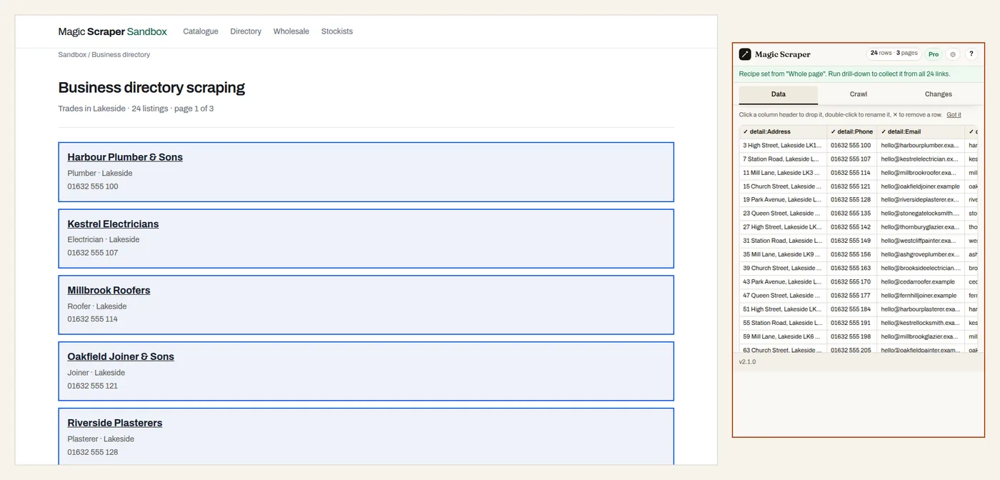

About this practice page
A local directory, and the lead list behind it
Trade directories, chamber of commerce member lists and “find a tradesperson” sites all
look like this: a short card per business in the list, and the useful details — email, website,
address, opening hours — one click away on its own profile page. If you are building a list of
businesses to contact, this is the job, and it has two halves.

24 businesses from three pages, with Address, Phone, Email, Website, Opening hours and Established added from each profile by drill-down. Watch it done on this page: “Turn any business directory into a lead list in 1 click” (YouTube) The first half: every listing
The list shows a name, a trade and a phone number, eight to a page, over three pages. Collect
all three pages and you have 24 businesses with a phone each — in Magic Scraper, open it on this
page and press Start crawling .
The second half: what is on each profile
Each profile lays its details out as label and value pairs (Address , Phone ,
Email , Website , Opening hours , Established ). Turn on
drill-down , preview the first profile, and those become columns on every
row. The free version reads the first three profiles so you can see the result; Pro reads all of
them. Writing it yourself, it is a loop over the profile links, reading the pairs into a dictionary:
for link in soup.select("article.biz h3 a"):
page = BeautifulSoup(requests.get(urljoin(url, link["href"])).text, "html.parser")
labels = [dt.get_text(strip=True) for dt in page.select("dl.profile dt")]
values = [dd.get_text(strip=True) for dd in page.select("dl.profile dd")]
record = dict(zip(labels, values))Checking the result, and using it well
24 rows; with the profiles read, six more columns. The phone number appears twice, once from
the list and once from the profile — keep one. On a real directory, keep to business details,
check the site’s terms, and mind the rules on contacting people where you are:
is it legal to scrape a business directory?
For the whole workflow, from finding the directory to keeping only the leads you don’t have, see
building a B2B lead list .
Try it yourself: get Magic Scraper free and open it on this page.